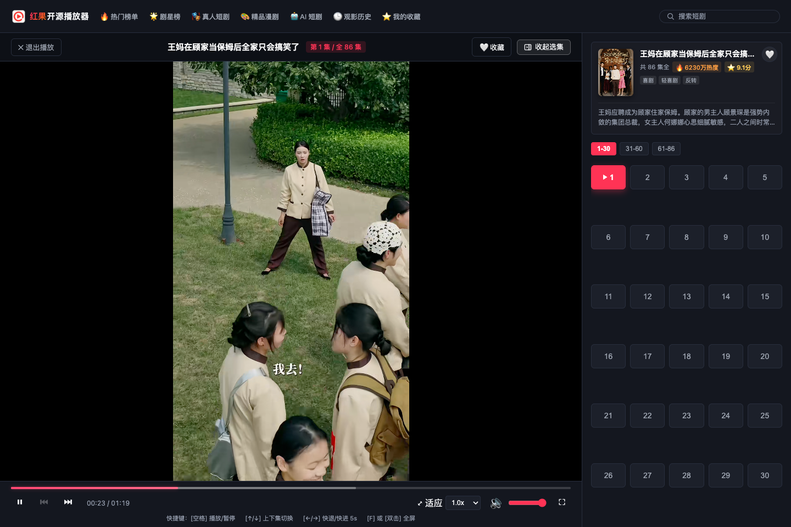

Mac · Apple Silicon
M 系列芯片。安装镜像，拖入「应用程序」。
下载 dmg最新的 mac-arm64.dmg桌面播放器 · v1.0.1
搜短剧是 macOS 与 Windows 的桌面播放器。可以浏览热门榜和新剧榜，检索剧目，连续播放，并在本机记住进度。它不是红果官方客户端，也没有账号登录。

v1.0.1
按钮会指向最新 Release 里对应后缀的安装包。脚本尚未取到文件名时，点击会打开发布页，因此以后的版本号变化不会把链接变成失效的旧文件名。zip 包也在该页。
M 系列芯片。安装镜像，拖入「应用程序」。
下载 dmg最新的 mac-arm64.dmgIntel 芯片的 x64 安装镜像。
下载 dmg最新的 mac-x64.dmgx64 安装向导。可选目录，并创建桌面和开始菜单快捷方式。
下载安装程序最新的 win-x64-setup.exex64 单文件。不写安装目录，双击运行。
下载便携版最新的 win-x64-portable.exe界面
下面三张图都是仓库里的客户端界面截图，不是重新绘制的示意。画面中的剧目属于原权利人，本站不提供这些视频文件。图中窗口标题仍显示上游名称。
能做什么
按分类浏览剧目，从海报和简介里挑选。
搜索剧名、演员或题材。最近 10 条搜索留在本机，可以单条删除或清空。
查看演员并进入主页，从作品开始播放。
分集播放、自动下一集。多季剧可以按季排序后切换。
可以开关，并调整行数、速度和不透明度。弹幕组件是 MIT 许可。
记住剧集和进度。播放时打开其他页面，视频暂停并缩到右下角。
使用
苹果芯片选 Apple Silicon，Intel Mac 选 Intel，Windows 选 x64 安装版或便携版。没有 Linux 安装包。
macOS 打开 dmg，把「搜短剧」拖进「应用程序」。Windows 安装版按向导安装；便携版直接运行。
从榜单或搜索进入。空格或 K 暂停，↑ ↓ 换集，← → 快退快进 5 秒，F 或双击画面全屏，J 收起选集，M 静音。
观看历史、收藏、搜索和偏好只写在本机。macOS 在「~/Library/Application Support/搜短剧/data/」，Windows 在「%APPDATA%\搜短剧\data\」。应用不会自动覆盖安装；菜单里的「检查更新」会打开对应的发布说明或安装包。
常见问题
安装包没有公证，Gatekeeper 可能拦截。先核对 Release 和 SHA256。隔离标记的处理见下载一节，不要把它理解成正式签名。
安装包没有正式代码签名。只从本仓库 Release 下载，并核对 SHA256。
这表示当前运行的不是写入了仓库名的正式安装包，例如在源码目录执行 npm run app。
节目来自第三方公开接口，是否可看会变化。本仓库不保存剧集文件。
没有。安装包只覆盖 macOS Apple Silicon、macOS Intel 和 Windows x64。
开源
本仓库是 1moc/souduanju。代码来自 zfdang/hongguo-open-player 的提交 f57df9c。应用内版权行保留 Copyright © 2026 zfdang。
剧集、海报和弹幕的版权属于原权利人。本站和仓库都不附带这些媒体文件。页面不说明如何解密或绕过播放限制。